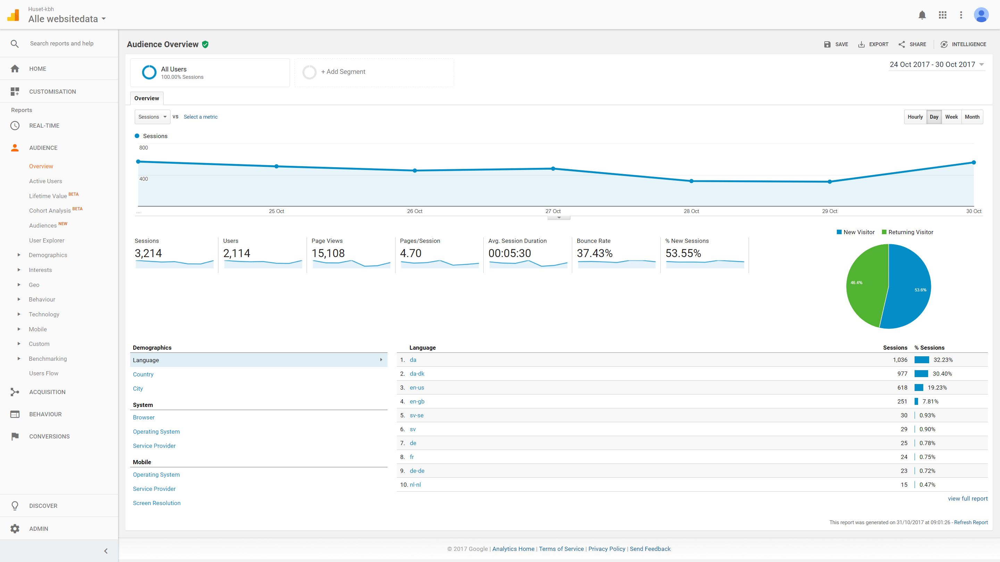
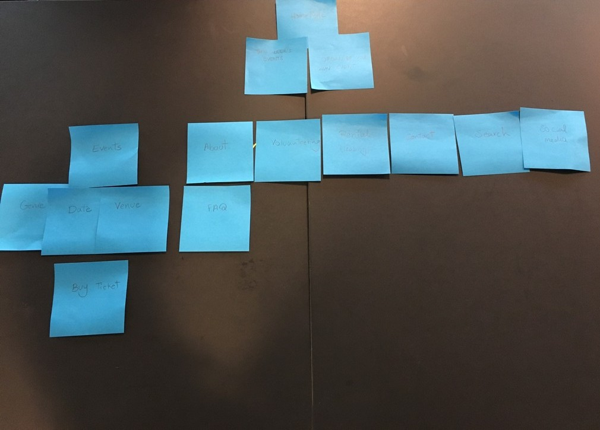
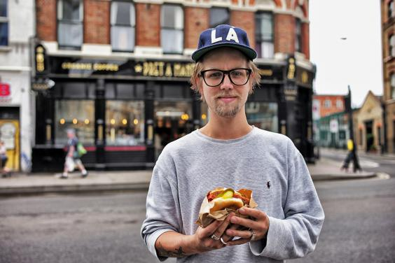
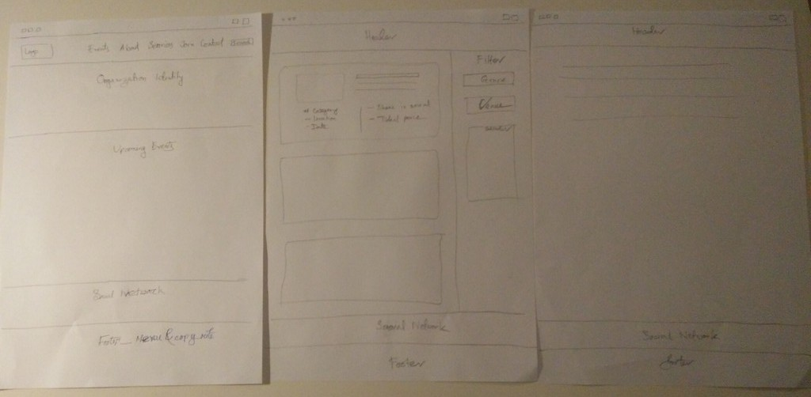
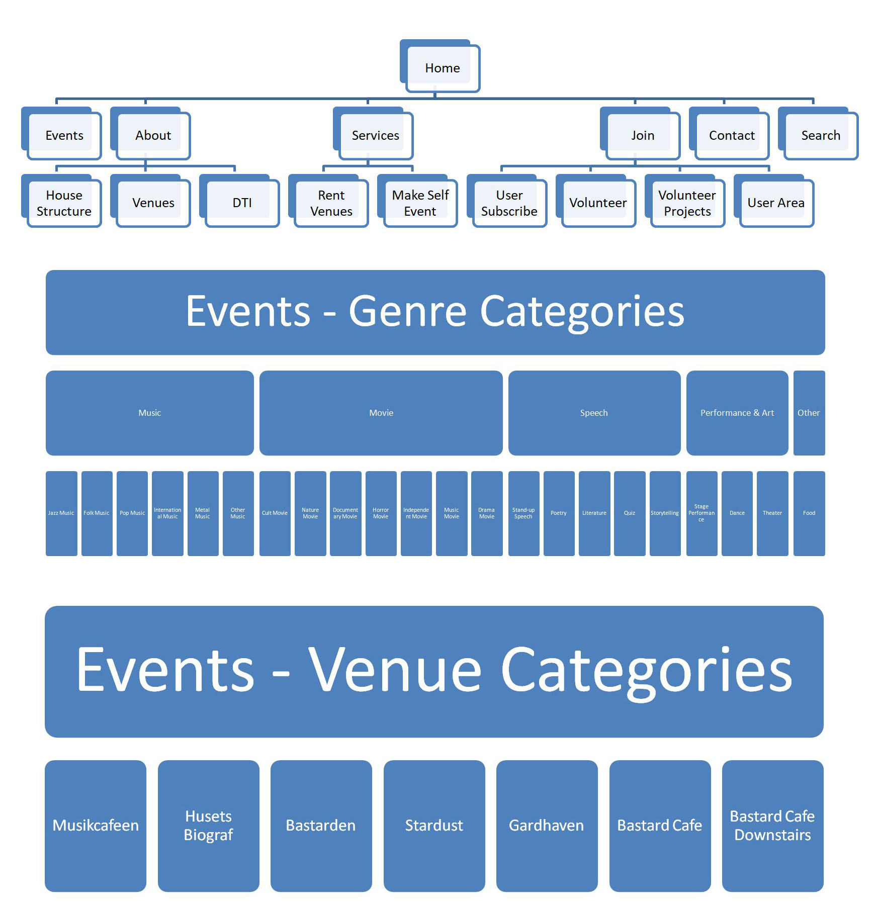
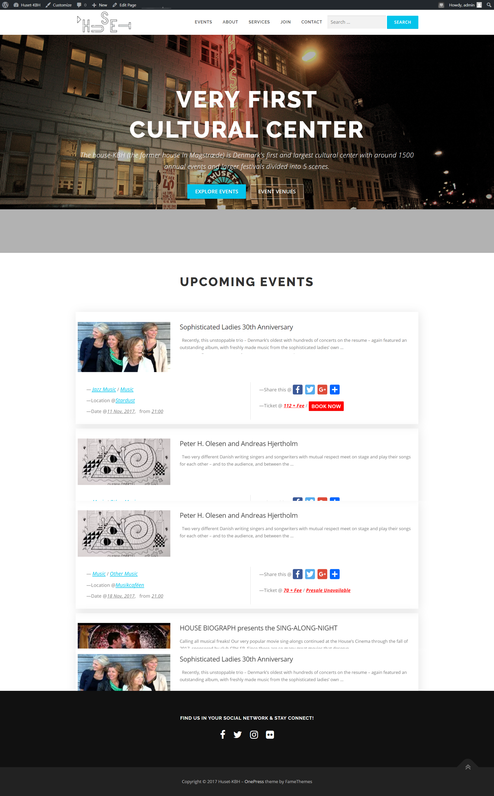

Huset-KBH
Huset was founded in the 1970s and is the largest culture house in Denmark. There are more than 1500 events every year and roughly 400.000 visitors. The main objective of this study is to improve to reach it's target audience, increase user traffic, optimize design and user experience, while increasing the number of subscribers to its various channels

Google Analytics Analysis
During the investigation of the Google analytics, we found some interesting data which could lead to some improvements. As we heard on the introduction Huset wants to focus on internationality but in the statistics we found that only 9.94% of the visitors changed the language to English. Out of human nature laziness some visitors willing to leave without searching for the English button so if the page would come in in English generally the Bounce Rate could decrease. The Session Duration could be improved too by making the webpage more interactive (e.g. videos about events) that also could help to have lower Bounce Rates.
Card Sorting
One individual, 21 years old international student participated in card sorting test. The objective of the test was to find out what’s the most important information to user. Base the on result of this test, we disagree on having social media in header due to fact that most of users come to websites from social media. We agree on having upcoming events on homepage.

Persona
After deciding on our target audience, we have chosen three potential visitors of Huset. Based on the firm's introduction we excluded the locals so we put our focus on foreigners, let them be students living here and tourists. After creating our three personas we believe we have perfectly described the everyday guests of Huset KBH.

Luuk De Vries
Luuk De Vries is a foreign Student from Amsterdam, studing Computer Science in Copenhagen who is open to meeting new people and experience the real 'Copenhagener lifestyle'. Luuk doesn't like to plan ahead, spontaneous and easy-going person. He is looking for places to meet new people, preferably other foreign students interested in playing board games along while enjoying a few beers.
Yves & Joseph
Yves and Joseph are toourists visiting from Barcelona visiting Copenhagen. They are interested in visiting local places, which are open and welcoming with foreigners. They would like to enjoy attending music events but do not want to plan ahead too much. So they are looking for place where they can find cultural events are taking place.
Prototype Development Process
For developing newly structured prototype we have used wordpress. We have installed the wordpress in our experimental hosting service. We have used Advanced Custom Field, ACF to REST API & Custom Post UI to organized all the events and categorized into different categories such a way that we can easily use the categories as a filtered events.

Paper Prototypes
After taking a look at Huset's current website we have presented our ideas on sketches, after choosing the best one, which could work on the official webpage, we have created a few paper prototypes for different pages in order to see how would it look in real life format. Our prototypes show how the pages should be organized and also the main functions on every one of them.
Sitemap Structure
Based on our research about Huset's webpage, we found some issues which could be improved. First of all, we would like to start with the placing of the logo and navigation bar. We found out that most webpage visitor look on the left top corner first as we all do while reading books. We believe that position will be best for organization logo and the navigation bar on the top lying from side to side. This would increase the brand recognition, moreover when the guests want to find something they must take a full look on the homepage before clicking on navigation. As getting deeper on the page we found that under "leasing" there are too much information making it more complicated to understand besides that we placed it under "Service" because we believe renting out the place is an active part of services. In our opinion the article about volunteering has the same issues therefore we would make them more clear and easier to understand. We created a new option in the navigation called "Join" where you can apply for volunteering as well as getting membership.

Developed Prototype
For more information please visit our prototype that is currently running from our testing evnvironment. Developed Prototype
